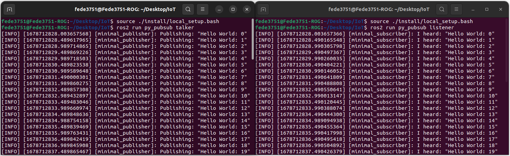

IoT Lab Lecture 2 - 22/03/2023
In this lecture, we will dig for the first time into writing code for a ROS project.
We have previously seen how to interact directly with ROS nodes using the console, which allow us to
interact in a simple way with our program. This can be really helpful when debugging (as it allows us to
interact with other nodes in the simplest way possible), but is not enough when we want to develop
more complex applications, and interact with different nodes simultaneously.
In this lecture, we will see how to interact first with topics, and then services.
Some excercies are given to test your understanding of the new arguments.
Creating your first ROS Application
Up until now, we have seen the paradigm behind a ROS project; however, we have still no clue on how to start a project from scrap.
The most attentious readers may have figured out (from what we said about the source command in the first lecture) that ROS works with different workspaces which contain everything you need to run your code, and they would be right.
In fact, a ROS project is exactly another workspace to source below the ros2 dependencies, once you do that, running your ROS project is no different from running a new TurtleSim node.
We will now see how we can build workspace and packages to organize our code, and then, how to write a simple publisher function.
At the end of this part, you should be able to instruct your turtle to move in a particular way just by running your written code.
Let's get started!
Using colcon
In this part, we will be using the tool colcon to build our first ROS package.
Let's install it before.
If you're using Ubuntu, just run:
sudo apt install python3-colcon-common-extensions
While, on MacOS:python3 -m pip install colcon-common-extensions
With that done, we are ready to use colcon.Let's start by creating a single folder of your choice for your workspace.
Then create a folder named src inside of it.
In this workspace, we are going to clone all the examples of ROS.
Once you're in your src folder, just type:
git clone https://github.com/ros/ros_tutorials.git -b humble-devel
This should have populated your src directory with all the source code of the examples.Before building, if you're using Ubuntu, you may have to check if you have all the dependencies to build your workspace. To do that, go back to the main folder of the workspace and type:
rosdep install -i --from-path src --rosdistro humble -y
You can now build the examples by using the command:colcon build
And test if the build went fine with:colcon test
If everything went fine, you should now be ready to source your new workspace.The file to source a built workspace will be in the install directory. If you're still in your workspace directory, you can source either by running the local_setup.bash file:
. install/local_setup.bash
orsource ./install/local_setup.bash
Just like we did for the ROS main dependencies.If you now try to run your TurtleSim application, it will run from your sourced overlay, instead of the main ROS installation.
If you want a confirmation of this, you can try to edit the name of the application Window. To do that, just edit the setWindowTitle function on line 52 of the file turtle_frame.cpp.
Creating a Package
Most of the time in ROS, you will be working with different packages. A package can be considered a container for your ROS code, and is the ideal way of storing and sharing your code with others.
Packages can be written either in Python or C++, and work together without any conflict.
A ROS workspace containing multiple packages would look something like this:
workspace_folder/
src/
package_1/
CMakeLists.txt
package.xml
package_2/
setup.py
package.xml
resource/package_2
...
package_n/
CMakeLists.txt
package.xml
In your src folder, you can build your Python package with the following syntax:
ros2 pkg create --build-type ament_python [package_name]
For our first package, we will also create a simple node which will serve us as an introductionary example for writing our first node.To do that, we will use the following command:
ros2 pkg create --build-type ament_python --node-name my_node my_package
Once you do that, you can build your package exactly like we've seen before.Go back to the main folder and type:
colcon build
Now, if you source your package, you should be able to run your node with the command:ros2 run my_package my_node
Which should output something like this: The source file for this message can be found here:
The source file for this message can be found here:
src/my_package/my_package/my_node.py
With this. You have officialy created your first ROS node from scrap.Nice. Now I guess you would like to do something actually interesting with the node. Let's get to it!
Writing your first script
Using Topics - Writing a Publisher and Subscriber Nodes
In this part, we will write our first couple of publisher and subscriber nodes for a topic.
Let's first create a package for our example:
ros2 pkg create --build-type ament_python py_pubsub
Now, let's cheat a little bit.Instead of writing our publisher and subscriber from scratch and being lost for hours in order to understand the syntax, let's copy the code of two simple publisher and subscriber from the ROS examples.
Just navigate to src/py_pubsub/py_pubsub and copy the examples from the ROS github with the following command:
wget https://raw.githubusercontent.com/ros2/examples/humble/rclpy/topics/minimal_subscriber/examples_rclpy_minimal_subscriber/subscriber_member_function.py
wget https://raw.githubusercontent.com/ros2/examples/humble/rclpy/topics/minimal_publisher/examples_rclpy_minimal_publisher/publisher_member_function.py
Let's take a look at the code of these scripts, before running them.
This is the code of the subscriber:
import rclpy
from rclpy.node import Node
from std_msgs.msg import String
class MinimalSubscriber(Node):
def __init__(self):
super().__init__('minimal_subscriber')
self.subscription = self.create_subscription(
String,
'topic',
self.listener_callback,
10)
self.subscription # prevent unused variable warning
def listener_callback(self, msg):
self.get_logger().info('I heard: "%s"' % msg.data)
def main(args=None):
rclpy.init(args=args)
minimal_subscriber = MinimalSubscriber()
rclpy.spin(minimal_subscriber)
# Destroy the node explicitly
# (optional - otherwise it will be done automatically
# when the garbage collector destroys the node object)
minimal_subscriber.destroy_node()
rclpy.shutdown()
if __name__ == '__main__':
main()
Let's start with the first lines:
import rclpy
from rclpy.node import Node
We are additionally importing separately the Node class, to keep namespaces shorter for the rest of the code.
We then define a our node MinimalSubscriber, and we do that by extending the Node class.
class MinimalSubscriber(Node):
Then we define its __init__() method:
def __init__(self):
super().__init__('minimal_subscriber')
self.subscription = self.create_subscription(
String,
'topic',
self.listener_callback,
10)
First of all, we call the parent __init__() and pass it a name for the node.
Then, we subscribe our node to a topic using the function create_subscription().
The first argument of the function defines the type of message the topic takes. In this case, we are defining a subscriber to a topic which takes in input messages of type String.
The name of the topic is given as the second arguent of the function. In this case, our topic is simply called "topic".
Note that a topic is never "created" from scratch, we are just writing a subcriber for it.
This means that, in the event of the topic not existing yet, we will create a new one with the given name. Otherwise the node will just subscribe to an already existing topic.
We will soon see that the same behaviour applies to publishers.
We then define, with the third argument, a callback for the subscription, this is the function that will be executed when messages are received by our subscriber.
Here, we are calling the function self.listener_callback(), which is later defined as follows:
def listener_callback(self, msg):
self.get_logger().info('I heard: "%s"' % msg.data)
The last value is just the length of the queue for our subscriber, it means that if at a given time we have a queue of more than 10 published messages, additional messages will be dropped.
We then define our main function, where all the logic of our node is instantiated and executed, let's see how we do that:
rclpy.init(args=args)
with this, we are starting our ROS client libraries, and passing them arguments given in input (we don't use them at this time).We then create our node and store it in new variable:
minimal_publisher = MinimalPublisher()
And then call the function rclpy.spin() and pass the node to execute our node:rclpy.spin(minimal_subscriber)
After the node has finished executing (which, in our case, is only when we manually close it from console), we destroy it and shutdown the rclpy libraries as follows:
minimal_subscriber.destroy_node()
rclpy.shutdown()
This complete our overview of the subsrciber node.
Let's now take a look at the code of the publisher, and comment what is new:
import rclpy
from rclpy.node import Node
from std_msgs.msg import String
class MinimalPublisher(Node):
def __init__(self):
super().__init__('minimal_publisher')
self.publisher_ = self.create_publisher(String, 'topic', 10)
timer_period = 0.5 # seconds
self.timer = self.create_timer(timer_period, self.timer_callback)
self.i = 0
def timer_callback(self):
msg = String()
msg.data = 'Hello World: %d' % self.i
self.publisher_.publish(msg)
self.get_logger().info('Publishing: "%s"' % msg.data)
self.i += 1
def main(args=None):
rclpy.init(args=args)
minimal_publisher = MinimalPublisher()
rclpy.spin(minimal_publisher)
# Destroy the node explicitly
# (optional - otherwise it will be done automatically
# when the garbage collector destroys the node object)
minimal_publisher.destroy_node()
rclpy.shutdown()
if __name__ == '__main__':
main()
The notable differences are in the function used to interact with the node, here we use:
self.publisher_ = self.create_publisher(String, 'topic', 10)
Which works exactly like create_subscriber() function, but instead, creates a publisher for the given topic.We then create a ROS timer in order to schedule a periodic action, using the following function:
self.timer = self.create_timer(timer_period, self.timer_callback)
This means that, every timer_period seconds, we call the function self.timer_callback()The function is defined as follows:
def timer_callback(self):
msg = String()
msg.data = 'Hello World: %d' % self.i
self.publisher_.publish(msg)
self.get_logger().info('Publishing: "%s"' % msg.data)
self.i += 1
The rest of the code should be clear, assuming that nothing went unnoticed in the subscriber example.
Please refer to that if you are missing something.
Linking the new nodes and executing them
In order for these two nodes to be actually recognized by ros2, we will need to change some files.
As you may have noticed, this time we didn't create the package with a node like before, so we manually need to input the new nodes.
In order for files to be considered nodes by ROS, we need to define entry points in the setup.py file of the package.
You can get an idea of the syntax and how they are defined by looking back at the package which we created before with the simple node.
Let's do the same for this new package.
Open setup.py, and edit the line entry_points as follows:
entry_points={
'console_scripts': [
'talker = py_pubsub.publisher_member_function:main',
'listener = py_pubsub.subscriber_member_function:main',
],
},
Once you source your package, you should be able to run both the subscriber and the publisher, let's do it.
ros2 run py_pubsub talker
And in another console (after sourcing your package again):ros2 run py_pubsub listener
This should give you two nodes talking on the topic named "topic", using a String message.  Great! We finally created our first two nodes which actually do something using the ROS paradigm.Now, let's take some time to look at the code that made this possible.
This should give you a pretty good idea on how to write ROS nodes which use topics.
We will do the same for both services and actions soon, but first, let's try to use this new knowledge to move the Turtle in TurtleSim in a more "complex" way.
You can test your new knowledge with the excercise which follows.
Excercise 2 - Moving TurtleSim with a Publisher
You are requested to write a ROS publisher which interfaces with TurtleSim!
Now that you are able to write a more complicated behaviour than a simple movement, you should be able to program
the turtle to do something more fancy.
You are here requested to move the turtle in a square path.
There are multiple solutions to this problem.
Feel free to come up with your own solution!
How did it go?
You may have some problems in using for the first time external interfaces in your code.
The first thing you should do, is importing the Twist message, in order to be able to send
it to the right topic later (which is /turtle1/cmd_vel).
The Twist message is also composed of two Vector3 variables,
so we will have to import that too.
We will use the file minimal_publisher.py as a reference.
Just copy the content of it in a new package of your choice, and we will use that to write our code.
These imports should be added to your code:
from geometry_msgs.msg import Twist
from geometry_msgs.msg import Vector3
self.publisher = self.create_publisher(
Twist,
'/turtle1/cmd_vel',
10
)
What we need to change now is the timer_callback(), in order to accomodate our new message.
First, let's define outside the class the set of linear movements our turtle will take as follows:
turtle_moves = [
Vector3(x=1.0, y=0.0, z=0.0),
Vector3(x=0.0, y=1.0, z=0.0),
Vector3(x=-1.0, y=0.0, z=0.0),
Vector3(x=0.0, y=-1.0, z=0.0)
]
All we need to do now is send these movements in order with our timer_callback() function.
The function should be something like this:
def timer_callback(self):
msg = Twist()
msg.linear = turtle_moves[self.i%4]
msg.angular = Vector3(x=0.0, y=0.0, z=0.0)
self.i += 1
self.publisher.publish(msg)
Remember to create your self.i variable in your __init__() function, and set it to 0.
That's it!
The full code for the node is uplodaded at the following link: turtle_publisher.py
Your solution shoud look something like this:
Extra: If you're ahead and want to try to tinker a little bit more with ROS, try to make the Turtle move
by going always forward. This means that the turtle should rotate when it reaches a corner of the square.
Performing a perfect square with a rotation may be tricky, so don't worry too much about that.
Can you also do that by listenting to /turtle1/pose?
Give it a try!